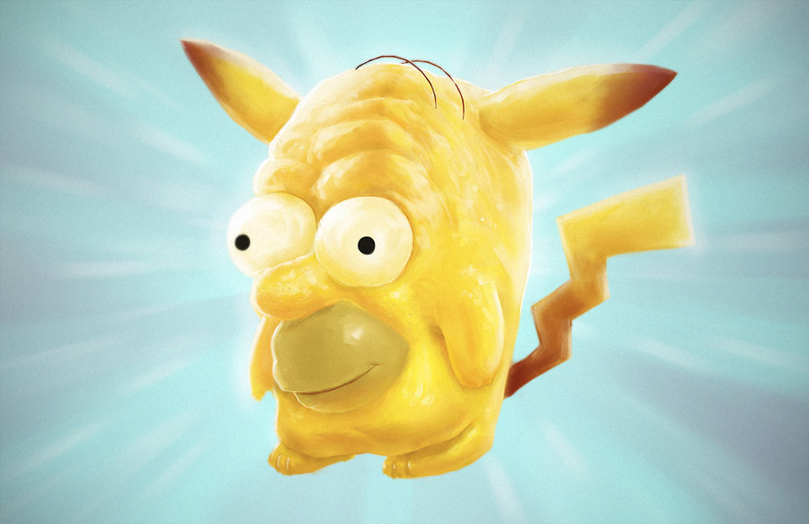

포켓몬 하면 이 가사의 노래가 빠질 수 없다.
여기서 꼬북이와 파이리, 피카츄가 나오는데
지우가 포켓몬들에게 싸우도록 유도하며 우리는 모두 친구 라며
포켓몬들을 세뇌한다.
그리고 이때 포켓몬 목소리로 맞아! 라고 말 하는것이 그 증거다.
이번 2절에는 피카츄가 사람 말로 말하지 않고 포켓몬 언어로 말한다. 지금 피카츄는 싫어! 아파! 라고 말 하고 있다.
여기서는 사람이 피카츄라고 말하는 데 이건 피카츄를 능욕 하는거다. 뜻은 에베베베 넌 암것도 못함 에베베베 라고 말 하는 것이다 그리고 에니메이션을 보면 피카츄가 몬스터볼에서 떨어지는데 이것은 피카츄가 내가 졌다 고 항복하는 표시다. 결국 피카츄는 지우레기의 어께에서 앉아 있어야 되는 신세가 되었다.